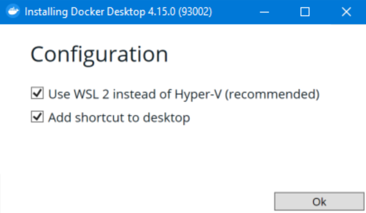
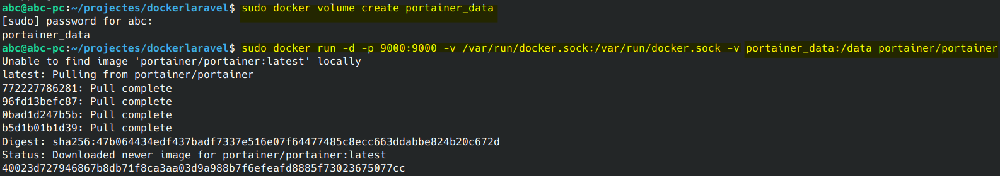
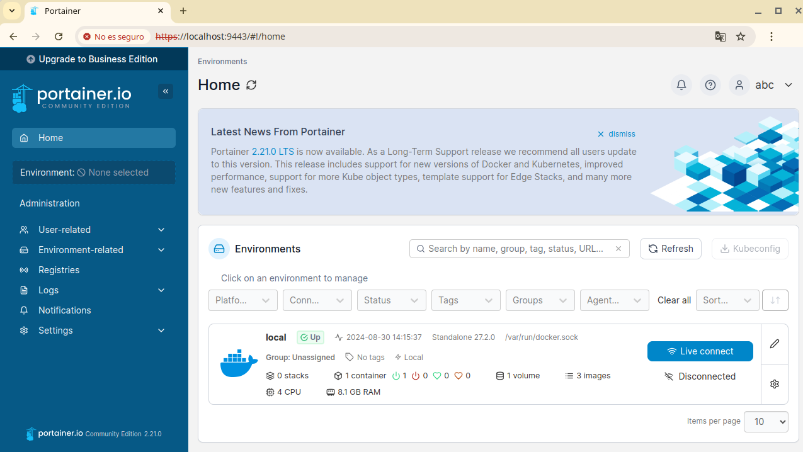
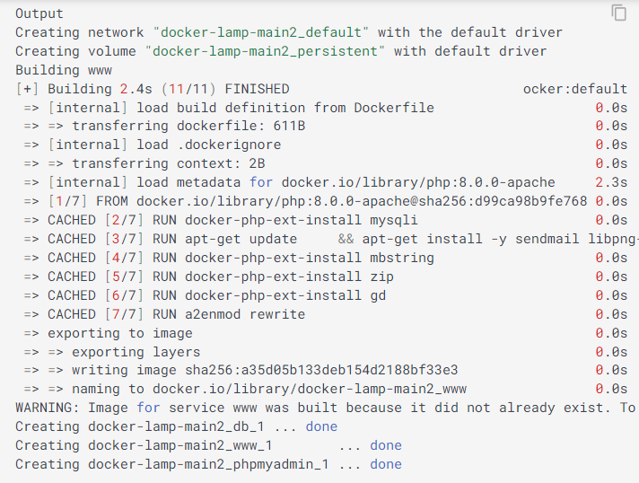

1.10. Posada en marxa¶
Per a poder treballar amb un entorn de desenvolupament local, l'hem de preparar amb les eines comentades.
Proposarem dues opcions; l'opció 1 serà la instal·lació del paquet XAMPP per a treballar directament en l'equip amfitrió (host); l'opció 2 serà crear un contenidor amb Docker.
En realitat podríem preparar l'entorn de diferents maneres (directament instal·lant en la màquina local amb el paquet XAMPP, mitjançant una màquina virtual amb VirtualBox...) però la utilització de Docker es veu justificada per la seua fàcil utilització, per l'aprofundiment en esta tecnologia que es veurà en altres mòduls d'este curs (Desplegament d'aplicacions web) i per la seua extensa utilització en la indústria (en tota mena d'entorns).
XAMPP vs Docker en Windows
Si treballaràs amb el teu propi ordinador, XAMPP és una solució més senzilla que Docker, sobretot si treballes amb Windows com a sistema operatiu.
Versions
Al llarg del curs usarem PHP 8.0.
1. Opció 1: XAMPP¶
XAMPP ( https://www.apachefriends.org/es/index.html) és una distribució composta pel programari necessari per a desenvolupar en entorn servidor. Es compon de les eines següents segons les seues sigles:
- X per al sistema operatiu (d'ací que també es conega com a LAMP o WAMP).
- A per a Apache.
- M per a MySQL / MariaDB. També inclou phpMyAdmin per a l'administració de la base de dades des d'una interfície web.
- P per a PHP.
- P per a Perl.
Des de la mateixa pàgina es pot descarregar el fitxer executable per al sistema operatiu del nostre ordinador. Es recomana llegir les FAQ de cada sistema operatiu amb instruccions per a la seua posada en marxa.
2. Opció 2: Docker¶
Docker (https://www.docker.com) és un gestor de contenidors; considerant un contenidor com un mètode de virtualització del sistema operatiu.
L'ús de contenidors requerix menys recursos que una màquina virtual; per tant, el seu llançament i la seua detenció són més ràpids que els de les màquines virtuals.
Així doncs, Docker permet crear, provar i implementar aplicacions ràpidament, a partir d'una sèrie de plantilles que es coneixen com a imatges de Docker.
Instal·lació
1. Actualitzar el sistema¶
Abans de començar, és recomanable actualitzar els paquets existents en el teu sistema:
sudo apt update
sudo apt upgrade -y
2. Instal·lar les dependències¶
Instal·la les dependències necessàries per a Docker:
sudo apt install -y ca-certificates curl gnupg lsb-release
3. Afegir la clau GPG de Docker¶
Afig la clau GPG oficial de Docker al teu sistema:
sudo mkdir -m 0755 -p /etc/apt/keyrings
curl -fsSL https://download.docker.com/linux/ubuntu/gpg | sudo gpg --dearmor -o /etc/apt/keyrings/docker.gpg
4. Afegir el repositori de Docker¶
Afig el repositori de Docker a les teues fonts d'APT:
echo \
"deb [arch=$(dpkg --print-architecture) signed-by=/etc/apt/keyrings/docker.gpg] https://download.docker.com/linux/ubuntu \
$(lsb_release -cs) stable" | sudo tee /etc/apt/sources.list.d/docker.list > /dev/null
5. Actualitzar l'índex de paquets¶
Actualitza l'índex de paquets d'APT novament per a incloure el nou repositori:
sudo apt update
6. Instal·lar Docker Engine, Docker CLI i Containerd¶
Ara, instal·la Docker usant l'ordre apt:
sudo apt install -y docker-ce docker-ce-cli containerd.io docker-buildx-plugin docker-compose-plugin
7. Verificar la instal·lació de Docker¶
Per a verificar que Docker s'ha instal·lat correctament, executa:
sudo docker --version
Hauries de veure la versió de Docker instal·lada.
8. Permetre l'execució de Docker sense Sudo (Opcional)¶
Si vols executar Docker sense usarsudo, afig el teu usuari al grup docker:
sudo usermod -aG docker $USER
Després d'executar esta ordre, tanca la sessió i torna a iniciar-la perquè els canvis tinguen efecte.
9. Provar Docker¶
Verifica que Docker funciona correctament executant un contenidor de prova:
docker run hello-world
Esta ordre descarregarà una imatge de prova i executarà un contenidor que hauria de mostrar un missatge de confirmació en el terminal.
10. Instal·lar Docker Desktop en Ubuntu (Opcional)¶
Si vols usar Docker Desktop en Ubuntu, seguix estos passos addicionals:
10.1) Descarregar Docker Desktop per a Linux: Visita la pàgina de descàrrega de Docker Desktop i descarrega la versió per a Linux.
10.2) Instal·lar Docker Desktop: Descomprimix el fitxer descarregat i executa l'instal·lador:
sudo apt-get install ./docker-desktop-<version>-<arch>.deb
10.3) Executar Docker Desktop: Inicia Docker Desktop des del teu entorn gràfic o executant docker-desktop en el terminal.
10.4) Configurar Docker Desktop: Quan s'inicie Docker Desktop per primera vegada, pots configurar-lo per a usar WSL 2 o bé executar contenidors natius en Linux.
11. Configurar Docker Desktop (Opcional)¶
Si vols fer configuracions addicionals com la quantitat de recursos que Docker pot usar, pots fer-ho des de la interfície gràfica de Docker Desktop.
Amb estos passos, hauries de tindre Docker i Docker Desktop completament instal·lats i preparats per a usar en el teu sistema Ubuntu.<hr>
Si tot i així no es poguera llançar Docker Desktop en Ubuntu, podem instal·lar el contenidor Portainer (pots veure com funciona en el punt següent docker de gestió de dockers Portainer).
1. Instal·lació de Docker-Desktop¶
Per a una instal·lació en Windows, l'ideal és instal·lar l'aplicació Docker Desktop ( https://www.docker.com/products/docker-desktop ) en els nostres entorns de desenvolupament (la qual ja inclou el nucli de Docker i l'eina Docker Compose).
Esta instal·lació requerix un programari addicional, WSL2, que és un subsistema de Linux dins de Windows; ací podem consultar-ne els mètodes d'instal·lació. Per sort, amb la mateixa instal·lació de Docker Desktop, ve també la de WSL (només haurem de tindre en compte tindre activada la casella d'instal·lació).

Quan acabe la instal·lació, reinicia la teua màquina.

2. Verificar la instal·lació¶
Una vegada Docker estiga instal·lat, obri PowerShell o Command Prompt i verifica la instal·lació:
docker --version
docker-compose --version
3. Crear o obrir el fitxerdocker-compose.yml¶
Assegura't de tindre un fitxer docker-compose.yml en el directori en què treballaràs. Este fitxer definix la configuració dels teus serveis.
Exemple d'un fitxer docker-compose.yml senzill:
version: '3.8'
services:
web:
image: php:8.2-apache
container_name: apache_php
ports:
- "8081:80"
4. Alçar el contenidor usant Docker Compose¶
4.1) Obri una finestra de PowerShell, Command Prompt o Terminal (si uses WSL).
4.2) Navega fins al directori on es troba el teu fitxer docker-compose.yml.
cd ruta/al/directorio
4.3) Una vegada estigues en el directori adequat, executa l'ordre següent per a alçar els serveis definits en el fitxer:
docker-compose up -d
5. Verificar que els contenidors s'estan executant¶
Després d'executar docker-compose up, pots verificar que els contenidors estan en execució amb:
docker ps
Si tot és correcte, hauries de veure llistats els contenidors definits en el fitxer docker-compose.yml.<br />
6. Accés als serveis¶
Si el fitxerdocker-compose.yml inclou serveis amb ports exposats (com en l'exemple de Nginx), pots accedir-hi des del teu navegador usant localhost i el port definit, per exemple:
http://localhost:8080
Portainer: docker de gestió de dockers
Portainer és una manera còmoda de gestionar entorns de contenidors distribuïts.
El programari s'instal·la com un contenidor Docker i, per tant, s'executa pràcticament en qualsevol lloc. Mostrem la rutina d'instal·lació i aportem consells útils.
Instal·lar¶
$ sudo docker volume create portainer_data
$ sudo docker run -d -p 8000:8000 -p 9443:9443 --name=portainer --restart=always -v /var/run/docker.sock:/var/run/docker.sock -v portainer_data:/data portainer/portainer-ce:latest

docker volume create portainer_data
docker run -d -p 8000:8000 -p 9443:9443 --name=portainer --restart=always -v /var/run/docker.sock:/var/run/docker.sock -v portainer_data:/data portainer/portainer-ce:latest
Llançar¶
Com qualsevol altre contenidor, podrem accedir-hi mitjançant un navegador (Firefox, Chrome, ...) introduint la URL:
https://localhost:9443

Si mostra el text següent, hem de reiniciar el contenidor del Docker Portainer:
docker restart portainer

Tornem a accedir via https://localhost:9443:

Funciona com un docker¶
Per a veure l'ID del contenidor podem llistar els contenidors:
$ sudo docker ps -a
Per a parar el contenidor:
$ sudo docker stop [ID]
Per a tornar a llançar el contenidor:
$ sudo docker start [ID]
Al llarg del curs anirem creant diferents contenidors amb els serveis necessaris, de manera que cada vegada només treballem amb el programari mínim.
Respecte a Docker, per a escriure els apunts hem utilitzat la versió 20.10 i en Docker Compose la versió 2.19.
Finalment, la versió de Docker Desktop que hem utilitzat és la 4.0.
2.1. Plantilla Servidor Web + PHP¶
Docker es basa en l'ús d'imatges per a crear contenidors. Docker Compose simplifica el treball amb múltiples contenidors i, per això, per a facilitar l'arrancada, ens centrarem en Docker Compose utilitzant una plantilla que únicament contindrà com a serveis Apache/Nginx i PHP.
Per a això, crearem una carpeta amb el nom proyecto1, i dins d'esta el fitxer docker-compose.yaml amb:
proyecto1 amb distints servidors en docker-compose.yml
- Estructura del projecte:
proyecto1/
│
├── docker-compose.yml
└── src/ # Carpeta del proyecto
- Fitxer
docker-compose.yml:
version: '3.8'
services:
web:
image: php:8.2-apache
container_name: apache_php
ports:
- "8081:80"
volumes:
- ./src:/var/www/html
environment:
APACHE_RUN_USER: www-data
APACHE_RUN_GROUP: www-data
APACHE_LOG_DIR: /var/log/apache2
networks:
- webnet
networks:
webnet:
driver: bridge
- Estructura del projecte:
proyecto2/
│
├── docker-compose.yml
├── .docker
│ ├─── nginx
│ │ └── conf.d
│ │ └── php.conf # Archivo configuración php en Nginx
└── src/ # Carpeta del proyecto
- Fitxer
docker-compose.yml:
version: '3.8'
services:
nginx:
image: nginx:1.19
ports:
- "8082:80" # Asegúrate de que el puerto está correctamente mapeado
volumes:
- ./src:/var/www/php
- ./.docker/nginx/conf.d:/etc/nginx/conf.d # Configuración personalizada de Nginx
depends_on:
- php
networks:
- webnet
php:
image: php:8.0-fpm
working_dir: /var/www/php
volumes:
- ./src:/var/www/php
networks:
- webnet
networks:
webnet:
driver: bridge
Assegura't que el teu fitxer de configuració de Nginx està correctament configurat. Ací tens un exemple bàsic que has de col·locar en./.docker/nginx/conf.d/default.conf:
server {
listen 80;
server_name localhost;
root /var/www/php;
index index.php index.html index.htm;
location / {
try_files$uri $uri/ /index.php?$args;
}
location ~\.php$ {
include fastcgi_params;
fastcgi_pass php:9000; # Asegúrate de que este nombre coincide con el nombre del servicio PHP
fastcgi_index index.php;
fastcgi_param SCRIPT_FILENAME $document_root$fastcgi_script_name;
}
}
Dins de la carpeta que continga eixe fitxer, hem de crear una carpeta src on col·locarem el nostre codi font.
Per a facilitar la posada en marxa, teniu les plantilles de:
-
Apache/PHP (versió 2 amb
a2enmod rewrite) o
disponibles per a descarregar.
Extra: ordres en Docker
Quan estiguem preparats, llançarem el servei mitjançant:
docker-compose up -d
Docker Compose primer buscarà la imatge definida en el sistema local, i si no pot trobar la imatge, la descarregarà des de Docker Hub. Veuràs un resultat com este:

Si volem veure el contingut dels fitxers de log del servei utilitzarem:
docker-compose logs -f
Per a copiar un fitxer des del nostre sistema a l'interior del contenidor:
docker cp ./miFichero idContenedor:/tmp
I a l'inrevés, si volem consultar un fitxer contingut dins d'un contenidor, el copiarem al nostre sistema:
docker cp idContenedor:/tmp/archivoAConsultar.txt ./
Finalment, si volem accedir a un terminal interactiu dins del contenidor:
docker exec -it nombreContenedor bash
Altres ordres que podem arribar a utilitzar són:
docker ps: Veure els contenidors que s'estan executant.docker ps -a: Veure tots els contenidors.docker start nombreContenedor: Arrancar un contenidor.docker images: Veure les imatges que tenim descarregades.docker stop $(docker ps -a -q): Detindre tots els contenidors en execució.docker rm $(docker ps -a -q): Eliminar tots els contenidors detinguts.
Docker stack
Hi ha diverses opcions mitjançant Docker que oferixen solucions completes i empaquetades per a tot l'stack de desenvolupament. En sessions posteriors podrem utilitzar tant Devilbox (http://devilbox.org) com Laradock (https://laradock.io).
... però vull saber com funciona ...
En el mòdul de "Desplegament d'aplicacions web" estudiareu en profunditat, a més de Docker, Apache i altres serveis que ens serviran d'ajuda per al desenvolupament en entorn servidor.
3. Editor de codi¶
En este curs emprarem Visual Studio Code (https://code.visualstudio.com) com a editor de codi font. Hi ha altres alternatives, i PhpStorm és l'IDE més conegut (però de pagament). Una altra possibilitat és utilitzar Eclipse, encara que és un entorn prou pesat.
VSCode és un editor de codi font que es complementa mitjançant extensions. Per a facilitar el treball al llarg del curs utilitzarem les extensions següents:
- Php Intelephense: oferix característiques avançades per a desenvolupadors PHP, com autocompletat intel·ligent, anàlisi estàtica i suport per a PHPDoc. Ajuda a detectar errors i a escriure codi més eficient.
- PHP Debug: per a la depuració de codi PHP. Permet connectar VSCode a un servidor de depuració PHP i proporciona eines per a inspeccionar variables, establir punts d'interrupció i fer un seguiment detallat del flux d'execució.
- PHP Sniffer: assegura que el codi PHP complisca els estàndards de codificació establits. Pots personalitzar les regles segons les necessitats del teu projecte.
- Laravel Intelephense (mamadou-diallo) - estén Inetelephense amb helpers de Laravel.
- Laravel Extra Intelephense (amiralizadeh9480) - suggerix rutes, vistes, config, models.
- Laravel Artisan (ryannaddy) - executa ordres artisan des de la paleta.
- Prettier (shufo.vscode-blade-formatter) - formata fitxers .blade.
- Database Client (cweijan.vscode-database-client) o MySQL - per a base de dades.
- GitHub Pull Requests and Issues (github.vscode-pull-request-github).
- GitLens (eamodio.gitlens) - historial, blame, diffs.
- PHP IntelliSense: extensió fonamental, aporta molta velocitat d'escriptura gràcies a l'«intellisense». Millora la codificació en proporcionar suggeriments intel·ligents de codi i completar automàticament fragments de codi mentre escrius en PHP.
- Docker
En la sessió següent començarem a utilitzar Intelephense però en esta sessió ens centrarem en Docker (més avant instal·larem noves extensions).
Per exemple, si obrim l'extensió de Docker, podreu visualitzar tant els contenidors com les imatges del vostre sistema. Des de cada contenidor, mitjançant clic dret, podem iniciar/detindre/reiniciar cada contenidor, així com veure'n el contingut o obrir un terminal dins d'este:

3.1. Configurar claus PHP en VS Code¶
Ves a Fitxer → Preferències → Configurar fragments de codi (File → Preferences → User Snippets), selecciona l'opció html i afig el snippet en el fitxer html.json:
"php": {
"prefix": "php",
"body": [
"<?php",
"$1",
"?>"
],
"description": "php tag"
}
A partir d'ara podrem abreujar la introducció de les etiquetes <?php i ?> en VS Code introduint php + TAB.
4. Hola Món¶
I com no podia ser d'altra manera, el nostre primer exemple serà un Hola Món en PHP.
Si anomenem el fitxer index.php, en accedir a http://localhost carregarà automàticament el resultat:
<!DOCTYPE html>
<html lang="es">
<head>
<meta charset="UTF-8">
<meta name="viewport" content="width=device-width, initial-scale=1.0">
<title>Hola Mundo</title>
</head>
<body>
<?php
echo "Hola Mundo";
?>
</body>
</html>